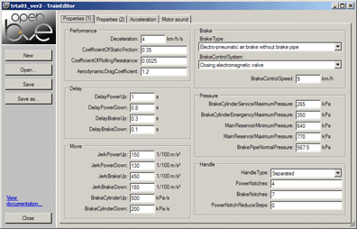
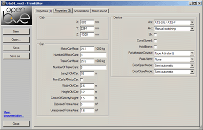
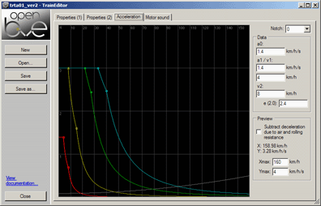
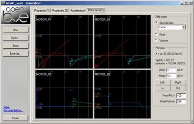

Train Editor
   
■ Overview
This tool can be used to more conveniently edit the train.dat. You can configure the train characteristics, preview the acceleration curves and edit the motor sound curves.
Please refer to the documentation of the train.dat for explanations about the various entries.
■ Notes
The BrakeNotches setting in the Handle section includes the hold brake device - the train.dat works this way. This means that the number of actual brake notches (excluding the hold brake) will be one lower than entered in the BrakeNotches field if the hold brake device is used.